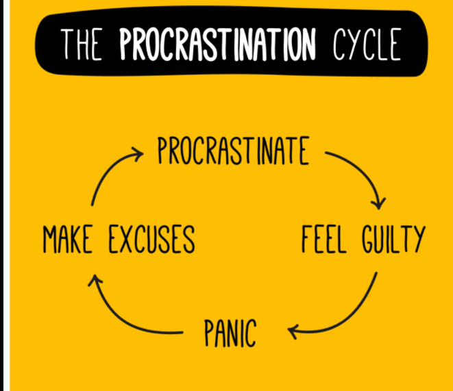
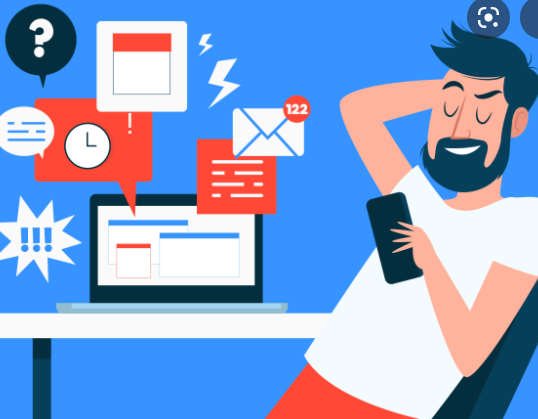

It’s pretty common to procrastinate in all aspects of our lives, whether that means scrambling to finish a work project or putting off going to the gym or doing laundry. We know what we want to do, but something gets in the way.
We get distracted or say “oh it’s fine, I’ll just do it later.” It’s no surprise the word procrastinate comes from the Latin word meaning “belonging to tomorrow.”
The problem, however, is that procrastination isn’t like other forms of distraction. An ill-timed call or meeting might interrupt your day. But true procrastination is an emotional problem that comes from within.
It isn’t just some shiny object pulling at your attention and focus. It’s actively going against something you planned to do. And it’s this conscious decision to delay that makes procrastination such a dangerous thing in the workplace.
So why do we procrastinate if we know we’re acting against our interests? I’m sure most of us would like to say it’s because something got way, but that’s not the whole truth.

With the instant gratification monkey at the helm, we upgrade from reasonable delay to true procrastination. The former can be useful at times (i.e. I’ll schedule that meeting for when I’ve finished this report) while the latter is
self-defeating (i.e. I should respond to that email right now, but I just don’t feel like it.)
It may be surprising, but studies have found that procrastinators who feel bad about their habit are more likely to procrastinate in the future. More than just getting behind on our tasks, the spiral of shame and guilt is what pushes us into
the procrastination doom loop.

With a bit of a clearer head, the next question is: What causes you to procrastinate?
As we mentioned before, procrastination is caused by tasks that bring up feelings of boredom, anxiety, or stress. Pretty much anything negative that our instant gratification monkey wants to avoid at all costs.
Unfortunately, the way most people schedule their time is a trigger for these emotions. Huge goals, tasks spread across days and weeks, and overstuffed to-do lists only cause anxiety and stress.
As we wrote in our Guide to Effective Goal Setting, smaller goals are easier to start and stick with. Every time your brain crosses something off a list you get a hit of dopamine. The more regular you can keep this going, the more likely you
are to keep up with your goals and not procrastinate.
Whenever you notice a task bringing up negative emotions or anxiety take a second and ask yourself: